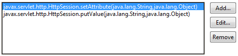
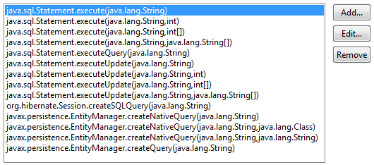

Audit - Rules - Tainted User InputDescriptionThis group contains audit rules that look for user input that is entered into vulnerable parts of the application. Each of these audit rules uses the same set of parameters for controlling its behavior:
For a discussion of how the rules in this category work, the kinds of violations they produce, and some possible resolutions for those violations, see A Description of the Tainted User Input Rules. |
Rules:
|
Summary
Request parameters and other tainted data should not be passed into the BasicAttribute of a LDAP context search request without sanitizing.
Description
This audit rule violates all BasicAttribute instance creations where tainted data is used.
Security Implications
Only trusted data should be passed to a search request as an attribute, otherwise an attacker could possibly create a request that will provide access to otherwise inaccessible and sensitive data.
Example
The following code creates a BasicAttribute with the use of unsanitized data retrieved from HttpServletRequest parameter and does not clean this data:
LdapContext ctx = getLdapContext();
String userName = req.getParameter("user");
BasicAttribute attr = new BasicAttribute("userName", userName);
try {
NamingEnumeration users = ctx.search("ou=People,dc=example,dc=com", attr, null);
Summary
Scripts being executed might be receiving data from the user or other unsafe sources.
Description
Code Injection occurs when the user is able to enter data directly into scripts to be executed.
The difference between Code Injection and Command Injection is that Code Injection attempts try to introduce scripts that are then included as part of the application runtime, while Command Injection attacks execute the user input source from outside of the application runtime.
To detect violations, this audit rule searches the code for script executions such as javax.script.ScriptEngine.eval(..) and traces where the script data could have come from. In cases where the source of the query is user input, such as data from a servlet request, javax.servlet.ServletRequest.getParameter(java.lang.String), or from a SWT Text widget, org.eclipse.swt.widgets.Text.getText(), a violation is created.
These two sets of methods, the locations where tainted user data can come from and the methods used to execute the scripts, are editable by the user.If methods are missing that are in a common package (such as java.lang.*), please let CodePro support know.
Security Implications
Successful Code Injection attacks can potentially have malicious scripts executed with permissions not guarded against by the program.
Example
The invocation of the method eval(..) would be flagged as a violation since it uses information passed from a SWT Text widget:
Text text = ...;
String script = text.getText();
ScriptEngine scriptEngine = ...;
...
scriptEngine.eval(script);
Summary
Commands being executed might be receiving data from the user or other unsafe sources.
Description
Command Injection occurs when the user is able to enter data directly into a command to be executed by the system.
The difference between Code Injection and Command Injection is that Code Injection attempts try to introduce scripts that are then included as part of the application runtime, while Command Injection attacks execute the user input source from outside of the application runtime.
To detect violations, this audit rule searches the code for command executions such as java.lang.Runtime.exec(..) and traces where the query data could have come from. In cases where the source of the command is user input, such as data from a servlet request, javax.servlet.ServletRequest.getParameter(java.lang.String), or from a SWT Text widget, org.eclipse.swt.widgets.Text.getText(), a violation is created.
These two sets of methods, the locations where tainted user data can come from and the methods used to execute methods, are editable by the user.If methods are missing that are in a common package (such as java.lang.*), please let CodePro support know.
Security Implications
Successful Command Injection attacks can potentially have malicious commands executed with permissions not guarded against by the program.
Example
The invocation of the method executeQuery(..) would be flagged as a violation since it uses the first name information passed from a servlet request:
Text text = ...;
String command = text.getText();
...
Runtime.getRuntime().exec(command);
Summary
User input might be getting printed directly out to a web site.
Description
Cross-Site Scripting occurs when the user is able to enter data directly onto a web site they are visiting.
To detect violations, this audit rule searches the code for printing statements such as HTTPServletResponse.getWriter().print(..) and traces where the output data could have come from. In cases where the source of the write statement is user input, such as data from a servlet request, javax.servlet.ServletRequest.getParameter(java.lang.String), or from a SWT Text widget, org.eclipse.swt.widgets.Text.getText(), a violation is created.
These two sets of methods, the locations where tainted user data can come from and the methods used to potentially print to a web site, are editable by the user. If methods are missing that are in a common package (such as java.lang.*), please let CodePro support know.
Security Implications
If a malicious user has access to enter a piece of JavaScript, the next user to load the web page could potentially have their cookies or other resources compromised.
Example
The invocation of the method print(..) would be flagged as a violation since it prints the first name information passed from a servlet request:
ServletRequest servletRequest = ...;
HttpServletResponse httpServletResponse = ...;
String firstName = servletRequest.getParameter("firstName");
httpServletResponse.getWriter().print(firstName);
Summary
Request parameters and other tainted data should not be passed into methods that could assist the Denial of Service state without sanitizing.
Description
This rule violates usage of an unvalidated user input in calls to methods that could assist the Denial of Service state.
Security Implications
Only trusted data should be used in such methods, otherwise an attacker can provide data that will lead to fast depletion of a thread pool or other Denial of Service states.
Example
The following code uses user input directly in a call to Thread.sleep(). By providing large values, an attacker can suspend a thread execution for a significant amount of time, which will ease the depletion of a thread pool:
String pause = req.getParameter("pause");
int seconds = Integer.valueOf(pause).intValue();
Thread.sleep(seconds * 1000);
Summary
User input might be getting input directly into a HTTP response.
Description
HTTP Response Splitting occurs when the user is able to enter data directly into an HTTP response.
To detect violations, this audit rule searches the code for statements such as HTTPServletResponse.sendRedirect(..) and traces where the redirection data could have come from. In cases where the source of the redirect location is user input, such as data from a servlet request, javax.servlet.ServletRequest.getParameter(java.lang.String), a violation is created.
These two sets of methods, the locations where tainted user data can come from and the HTTP response methods, are editable by the user. Note, the Cookie constructor is included since HTTP responses can include Cookie information through the HttpServletResponse.addCookie(..) method. If methods are missing that are in a common package (such as java.lang.*), please let CodePro support know.
Finally, cleaning methods such as HttpServletResponse.encodeRedirectURL(String), are taken into account and thus if user input is cleaned, it won't get flagged when passed to a HTTP response.
Security Implications
By having direct access to enter data directly into an HTTP response, a malicious user could potentially split the response by including a carriage return or a line feed, which can lead to a number of vulnerabilities.
Example
The invocation of the method sendRedirect(..) would be flagged as a violation since it puts the first name information passed from a servlet request directly into a HTTP response:
ServletRequest servletRequest = ...;
HttpServletResponse httpServletResponse = ...;
String firstName = servletRequest.getParameter("firstName");
httpServletResponse.sendRedirect(firstName);
Summary
User input might be getting used to write directly to a log.
Description
Log Forging occurs when user input is printed directly to a log or as part of a log.
To detect violations, this audit rule searches the code for logging statements such as logger.log(..) and traces where the logging string could have come from. In cases where the source of the path is user input, such as data from a servlet request, javax.servlet.ServletRequest.getParameter(java.lang.String), or from a SWT Text widget, org.eclipse.swt.widgets.Text.getText(), a violation is created.
These two sets of methods, the locations where tainted user data can come from and the methods used to create paths, are editable by the user. If methods are missing that are in a common package (such as java.lang.*), please let CodePro support know.
Security Implications
When a malicious user can enter information directly into the log, the application logging utility can become compromised.
Example
The invocation of log(..) would be flagged as a violation since it uses the user name information passed from a servlet request:
ServletRequest servletRequest = ...;
Logger logger = ...;
Level level = ...;
String userName = servletRequest.getParameter("userName");
String logMessage = "User input the following user name: " + userName;
logger.log(level,logMessage);
Summary
Request parameters and other tainted data should not be passed into methods creating an XPath expression without sanitizing.
Description
This rule violates usage of an unvalidated user input as a part of string used in creating an XPath expression.
Security Implications
Only trusted data should be used in an xpath expression, otherwise an attacker can perform an xpath injection, potentially bypassing the security system of an application and accessing sensitive data.
Example
The following code uses user input directly as an XPath expression:
String query = req.getParameter("query");
XPathFactory factory = XPathFactory.newInstance();
XPath xpath = factory.newXPath();
XPathExpression expr = xpath.compile(query);
Summary
User input might be getting used to create a path to a resource.
Description
Path Manipulation occurs when user input is used directly as a path or part of a path to a resource.
To detect violations, this audit rule searches the code for path creation statements such as File file = new File(..) and traces where the path could have come from. In cases where the source of the path is user input, such as data from a servlet request, javax.servlet.ServletRequest.getParameter(java.lang.String), or from a SWT Text widget, org.eclipse.swt.widgets.Text.getText(), a violation is created.
These two sets of methods, the locations where tainted user data can come from and the methods used to create paths, are editable by the user. If methods are missing that are in a common package (such as java.lang.*), please let CodePro support know.
Security Implications
When a malicious user can enter a path directly, system or application files that are assumed protected from users can become vulnerable.
Example
The invocation of the constructor File(..) would be flagged as a violation since it uses the path name information passed from a servlet request:
ServletRequest servletRequest = ...;
String fileName = servletRequest.getParameter("fileName");
File file = new File("..." + fileName);
Summary
Process controlling code might be receiving data from the user or other unsafe sources.
Description
Process Control occurs when the user is able to enter data directly into code that effects the process of the runtime. This can occur when the user has access to specify system commands or when then user has access to specify which libraries are loaded by the application.
To detect violations, this audit rule searches the code for process controlling code methods such as java.lang.System.load(..) and traces where the data could have come from. In cases where the source of the query is user input, such as data from a servlet request, javax.servlet.ServletRequest.getParameter(java.lang.String), or from a SWT Text widget, org.eclipse.swt.widgets.Text.getText(), a violation is created.
These two sets of methods, the locations where tainted user data can come from and the methods used to query the database, are editable by the user.If methods are missing that are in a common package (such as java.lang.*), please let CodePro support know.
Security Implications
Successful Process Control attacks can potentially allow the user to specify source code to be executed.
Example
The invocation of the method System.loadLibrary(..) would be flagged as a violation since it uses the library name information passed from a SWT widget:
Text text = ...;
String library = text.getText();
System.loadLibrary(library);
Summary
Request parameters and other tainted data should not be passed into methods accessing classes, methods or fields via reflection without sanitizing.
Description
This rule violates usage of an unvalidated user input as a part of class or method names referred to by reflection calls.
Security Implications
Only trusted data should be used in reflection class, otherwise an attacker can instantiate a class or invoke a method of their choice, potentially bypassing the security system of an application. This can lead to faulty or unexpected behaviour.
Example
The following code selects a class to instantiate with the use of unsanitized data retrieved from HttpServletRequest parameter and does not clean this data before instantiating the class:
LdapContext ctx = getDirContext();
String userName = req.getParameter("user");
String filter = "(user=" + userName + ")";
try {
NamingEnumeration users = ctx.search("ou=People,dc=example,dc=com", filter, null);
Summary
Request parameters and other tainted data should not be passed into Session without sanitizing.
Description
Sessions should only store trusted data, so that the developer accessing the data stored in a session would not have to decide whether to sanitize it.
Security Implications
Data stored in a session is usually considered by a developer as a safe one to use. If this data is not checked, it could get into the security-sensitive parts of an application, opening it to all kinds of injection attacks.
Example
The following code uses receives data via HttpServletRequest#getParameter() call and does not clean it before putting it into the session:
login = request.getParameter("login");
session.setAttribute(ATTR_LOGIN, login);

Summary
Users input should not be able to specify resource identifiers.
Description
Resource Injection occurs when the user is able to provide resource identifiers such as a port number.
To detect violations, this audit rule searches the code for ServerSocket creation methods such as java.net.ServerSocket.ServerSocket(int) and traces where the query data could have come from. In cases where the source of the port number is user input, such as data from a servlet request, javax.servlet.ServletRequest.getParameter(java.lang.String), or from a SWT Text widget, org.eclipse.swt.widgets.Text.getText(), a violation is created.
These two sets of methods, the locations where tainted user data can come from and the methods used to identify resources, are editable by the user.If methods are missing that are in a common package (such as java.lang.*), please let CodePro support know.
Security Implications
Successful Resource Injection attacks can potentially allow malicious users to gain access to resources not intended by the application.
Example
The invocation of the constructor ServletRequest(..) would be flagged as a violation since it uses the port number passed from a servlet request:
ServletRequest servletRequest = ..;
String portNumberStr = servletRequest.getParameter("portNumber");
int portNumber = (new Integer(portNumberStr)).intValue();
ServerSocket serverSocket = new ServerSocket(portNumber);
Summary
Request parameters and other tainted data should not be used as a part of a URL accessed via getResource() or getResourceAsStream() calls.
Description
Only trusted data should be used when creating a URL to access.
Security Implications
Otherwise an attacker can specify an arbitrary path, potentially accessing a filesystem or other sensitive data.
Example
The following code uses data from an HTTP request parameter to access a resource and does not validate this data:
String resURL = req.getParameter("resURL");
return ResourceRetriever.class.getResource(resURL);
Summary
SQL queries might be receiving data from the user or other unsafe sources.
Description
SQL Injection occurs when the user is able to enter data directly into SQL queries.
To detect violations, this audit rule searches the code for SQL queries such as java.sql.Statement.execute(..) and traces where the query data could have come from. In cases where the source of the query is user input, such as data from a servlet request, javax.servlet.ServletRequest.getParameter(java.lang.String), or from a SWT Text widget, org.eclipse.swt.widgets.Text.getText(), a violation is created.
These two sets of methods, the locations where tainted user data can come from and the methods used to query the database, are editable by the user.If methods are missing that are in a common package (such as java.lang.*), please let CodePro support know.
Also note, the SQL query methods for Hibernate and Persistence frameworks have been added.
Security Implications
Successful SQL Injection attacks can potentially drop tables, update the database in a malicious manner and even gain administrator access.
Example
The invocation of the method executeQuery(..) would be flagged as a violation since it uses the first name information passed from a servlet request:
ServletRequest servletRequest;
Connection connection;
Statement statement;
servletRequest = ...;
connection = DriverManager.getConnection("www.example.com", "myUserName", "myPassword");
statement = connection.createStatement();
String firstName = req.getParameter("firstName");
String query = "SELECT * FROM user_data WHERE firstName = '" + firstName + "'";
statement.executeQuery(query);

Summary
Request parameters and other tainted data should not be passed into LDAP context search() filter without sanitizing.
Description
This audit rule violates the usage of unvalidated user input in LDAP search request filters.
Security Implications
Only trusted data should be used in LDAP search filter, otherwise an attacker can create a malformed request similar to the classic SQL injection. This can lead to revealing otherwise protected data.
Example
The following code receives data via HttpServletRequest#getParameter() call and does not clean it before putting it into the LDAP search filter:
LdapContext ctx = getDirContext();
String userName = req.getParameter("user");
String filter = "(user=" + userName + ")";
try {
NamingEnumeration users = ctx.search("ou=People,dc=example,dc=com", filter, null);
Summary
Request parameters and other tainted data should not be passed into methods creating an InternetAddress without sanitizing.
Description
This rule looks for places where tainted user input is used as a part of the string used in creating an InternetAddress.
Security Implications
Only trusted data should be used in an InternetAddress, otherwise an attacker can perform a URL injection attack, potentially redirecting the system to access untrusted data.
Example
The following code uses user input directly as an InternetAddress:
String address = req.getParameter("address");
InternetAddress addr = new InternetAddress(url);